製作日期：2026-10-23。狀態：圖像與文件已完成；實際影片待生成。
風格與主題
赭棕青綠復古時裝插畫，雕塑般髮塊、幾何硬邊陰影、局部印刷顆粒。 主題：自我認同、身形接納、手作與友誼
角色
阿禾（少女／青年）與豆扣（動物）。
劇情大綱
阿禾照著高挑模特兒的輪廓做了一件長外套，卻被自己的下襬絆住。豆扣從衣襬下鑽出，他忽然發現：衣服應該配合身體。重新量身、剪短外套後，他用剩布為豆扣做披肩，兩個不同的身形一起走出店門。
劇情要點
羨慕高挑輪廓 → 過長下襬造成困擾 → 狗狗鑽出帶來轉念 → 量自己、改衣長 → 剩布成為同伴的披肩 → 穿著自己的比例出門
場景
赭棕裁縫工作室、窄框全身鏡、門外短巷；片頭為清晨窗台，片尾為午後街角長椅。
情緒方向
俐落、幽默、自信；從模仿走向合身。
Style
Retro fashion editorial illustration, ochre-brown ground, deep teal and focused rust accents, sculptural grouped hair, geometric hard-edged light and shadow, subtle local print grain, composed and stylish.
原始風格參考：../../05.jpg，只提取色彩、線條、構圖與肌理，不複製原作品角色。
中文大標題
不必長成別人
English title
Made to Be You
中文副標題
合身的模樣，就是自己的光
English subtitle
Your own shape is your own light.
中英文以語意、節奏與畫面情緒對應，避免逐字硬譯。所有分鏡小標題為 4–5 個中文字，中文字幕為 6–10 字；字幕另外剪輯疊加，不燒入分鏡圖。
阿禾
20歲青年裁縫阿禾，身高158公分、偏矮結實、約6.5頭身；深棕側分短髮、琥珀眼、圓方臉，無眼鏡。米白捲袖襯衫、赭紅背心、深青綠長褲、棕樂福鞋。深青綠單排兩扣外套：起初長至腳踝，改好後下襬在大腿中段，其餘領型袖口顏色不變。
豆扣
臘腸犬豆扣，肩高22公分、鼻至臀58公分，長身短腿，巧克力棕毛、淺棕口鼻與腳掌、胸口一小塊奶白毛、下垂長耳，赭紅細項圈。鏡頭08之前不穿衣；08起加一件深青綠短披肩，無帽。
角色四視圖是外觀的主要依據，體型表是身高比例的依據；同一人物不可逐鏡換臉、髮型、服裝配色，動物不可忽大忽小。僅依劇情改變明確指定的衣物與道具狀態。
狀態鎖定：片頭無外套、狗無披肩；01–04 外套腳踝長；05–06 脫外套改衣；07 起外套大腿中段長；08 起狗穿短披肩；片尾均為完成後衣物。四視圖青年穿完成版，犬四視圖下方另附披肩附件。
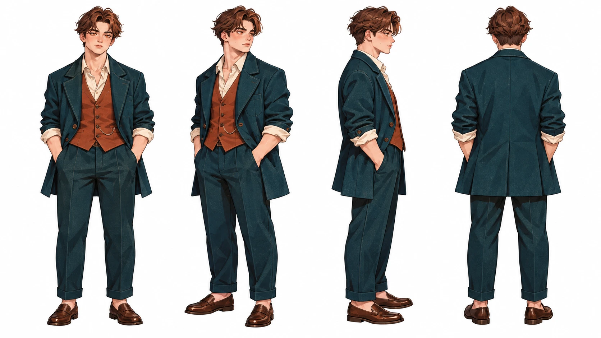
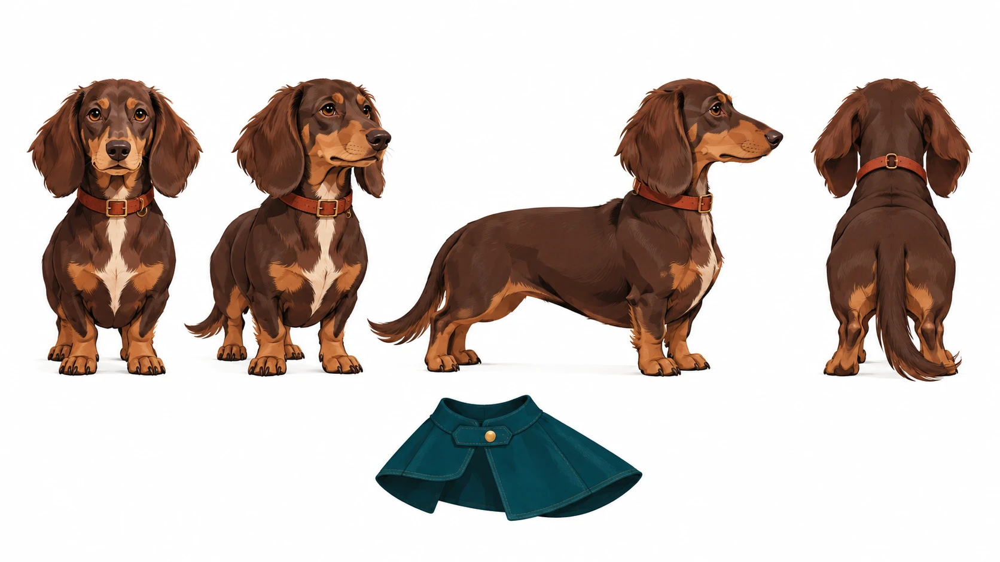
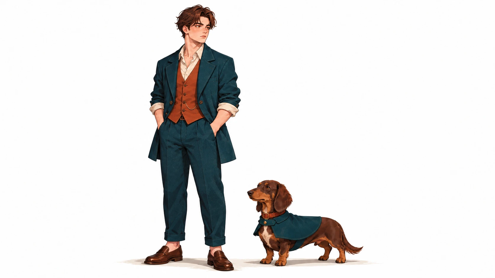
| 段落 | 時間 | 時長 |
|---|---|---|
| 獨立片頭 | 00–05 秒 | 5 秒 |
| 01 借來的輪廓 | 05–10 秒 | 5 秒 |
| 02 衣襬的重量 | 10–15 秒 | 5 秒 |
| 03 布底的小路 | 15–20 秒 | 5 秒 |
| 04 蹲下的發現 | 20–25 秒 | 5 秒 |
| 05 量回我自己 | 25–30 秒 | 5 秒 |
| 06 剪掉那一截 | 30–35 秒 | 5 秒 |
| 07 合身的微笑 | 35–40 秒 | 5 秒 |
| 08 剩布也有光 | 40–45 秒 | 5 秒 |
| 09 並肩出門去 | 45–50 秒 | 5 秒 |
| 10 自己的步幅 | 50–55 秒 | 5 秒 |
| 獨立片尾 | 55–60 秒 | 5 秒 |
Wide shot｜A Borrowed Shape｜05–10 秒（5 秒）
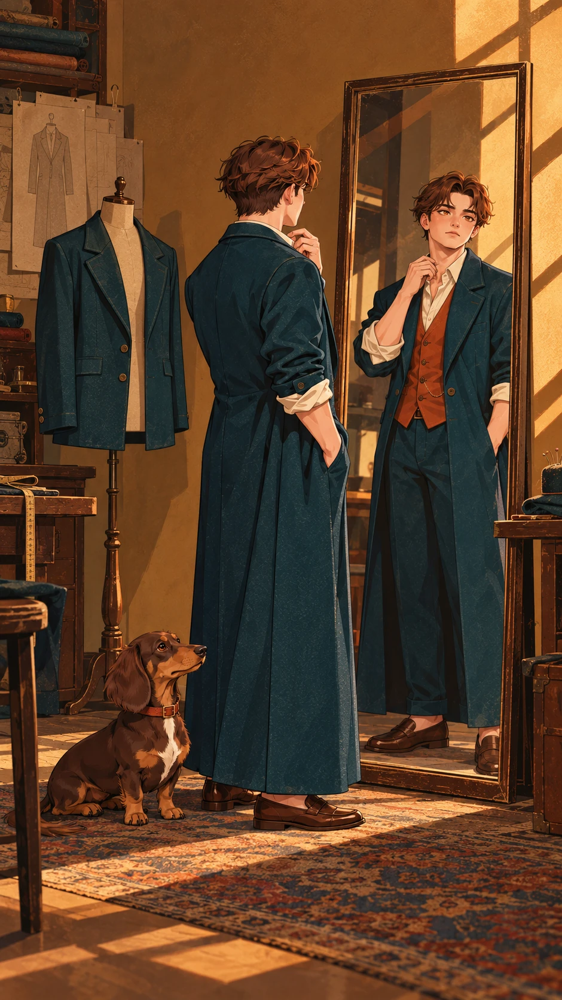
畫面描述｜中文
阿禾站在窄鏡前，穿著腳踝長的青綠外套；旁邊是一張無字的修長服裝輪廓紙，豆扣伏在地板。
Frame description｜English
In the small ochre studio, A-He faces a narrow mirror in the ankle-long teal coat; an unlettered elongated fashion silhouette hangs nearby, Doukou resting on the floor.
Video Caption｜中文
何必穿成誰的模樣
Video Caption｜English
Whose shape am I wearing?
圖像提示詞｜中文｜9:16
9:16直式，單一動畫分鏡，遠景。赭棕青綠復古時裝插畫，雕塑般髮塊、幾何硬邊陰影、局部印刷顆粒。畫面：阿禾站在窄鏡前，穿著腳踝長的青綠外套；旁邊是一張無字的修長服裝輪廓紙，豆扣伏在地板。角色一致性：20歲青年裁縫阿禾，身高158公分、偏矮結實、約6.5頭身；深棕側分短髮、琥珀眼、圓方臉，無眼鏡。米白捲袖襯衫、赭紅背心、深青綠長褲、棕樂福鞋。深青綠單排兩扣外套：起初長至腳踝，改好後下襬在大腿中段，其餘領型袖口顏色不變。 臘腸犬豆扣，肩高22公分、鼻至臀58公分，長身短腿，巧克力棕毛、淺棕口鼻與腳掌、胸口一小塊奶白毛、下垂長耳，赭紅細項圈。鏡頭08之前不穿衣；08起加一件深青綠短披肩，無帽。角色設定/character_human.png 與角色設定/character_animal.png 固定造型，角色設定/character_scale.png 固定體型。只載入本鏡頭有出現的角色參考，無角色的物件特寫不加入角色。以本鏡頭指定的衣物與道具階段為準；不把完成後的狀態提早出現。不加文字、字幕、標誌、水印、第三個角色；不畫拼貼、分格或角色轉身表。不改臉型、髮型、衣色、動物花紋與比例；不增加肢體或道具。
Image prompt｜English｜9:16
Vertical 9:16, ONE animation storyboard frame, Wide shot. STYLE: Retro fashion editorial illustration, ochre-brown ground, deep teal and focused rust accents, sculptural grouped hair, geometric hard-edged light and shadow, subtle local print grain, composed and stylish. FRAME: In the small ochre studio, A-He faces a narrow mirror in the ankle-long teal coat; an unlettered elongated fashion silhouette hangs nearby, Doukou resting on the floor. CHARACTER LOCK: A-He, a 20-year-old male apprentice tailor, 158 cm tall, short sturdy build, 6.5 heads high; short dark-brown side-parted hair, amber eyes, rounded square face, no glasses. Cream rolled-sleeve shirt, rust waistcoat, dark-teal trousers, brown loafers. A dark-teal single-breasted two-button coat: ankle-long before alteration, mid-thigh length after alteration, with identical lapels, sleeves and fabric. Doukou, a dachshund, shoulder height 22 cm, nose-to-rump length 58 cm; long low body, short legs, chocolate coat, tan muzzle and paws, small cream chest patch, long floppy ears, narrow rust collar. No clothing before shot 08; a short dark-teal hoodless cape from shot 08 onward. Use character_human.png and character_animal.png for exact designs, character_scale.png for size. Load only the character references visible in this shot; do not add characters to object-only close-ups. The specific shot state takes priority: do not introduce later wardrobe or prop states early. No text, captions, logos, watermarks, extra characters, collage, panels or turnaround. No redesign, scale drift, extra limbs, duplicated props or photographic rendering.
影片提示詞｜中文｜5秒｜9:16
5秒，9:16，以上述分鏡圖為唯一首幀。赭棕青綠復古時裝插畫，雕塑般髮塊、幾何硬邊陰影、局部印刷顆粒。阿禾站在窄鏡前，穿著腳踝長的青綠外套；旁邊是一張無字的修長服裝輪廓紙，豆扣伏在地板。動作與運鏡：緩推近，阿禾拉直過長衣襬，狗只輕抬頭。保持原圖角色、體型、場景位置與道具狀態，運動自然且小幅；最後0.5秒穩定收住。不要切鏡、變形、閃爍、憑空新增物件或生成文字；字幕於剪輯時另疊。
Video prompt｜English｜5 seconds｜9:16
5 seconds, vertical 9:16. Use the matching storyboard image as the sole first frame. Retro fashion editorial illustration, ochre-brown ground, deep teal and focused rust accents, sculptural grouped hair, geometric hard-edged light and shadow, subtle local print grain, composed and stylish. In the small ochre studio, A-He faces a narrow mirror in the ankle-long teal coat; an unlettered elongated fashion silhouette hangs nearby, Doukou resting on the floor. MOTION AND CAMERA: Slow push-in as he straightens the long hem; the dog merely raises its head. Preserve the supplied designs, body scale, scene geography and prop state; small natural movement, settle for the final 0.5 second. No cuts, morphing, flicker, invented objects or generated text. Add captions during editing.
Close-up｜The Weight of a Hem｜10–15 秒（5 秒）
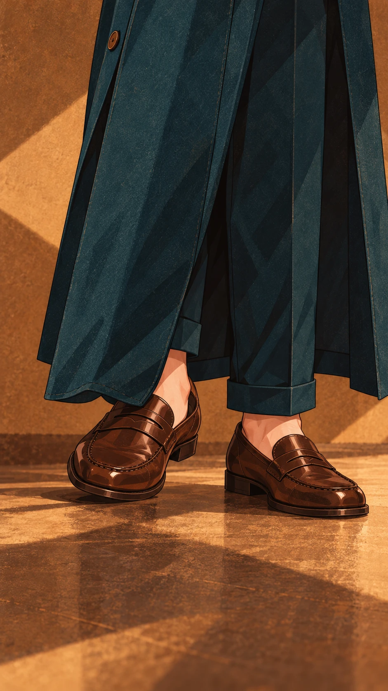
畫面描述｜中文
低機位只見鞋、腳踝長衣襬與地板，鞋尖壓到布邊；人物站穩，無跌倒，狗不入鏡。
Frame description｜English
Low close-up of loafers and the ankle-long hem; one toe catches its edge, both feet stable on the floor. No dog in frame.
Video Caption｜中文
借來的長度太沉重
Video Caption｜English
A borrowed length feels heavy.
圖像提示詞｜中文｜9:16
9:16直式，單一動畫分鏡，特寫。赭棕青綠復古時裝插畫，雕塑般髮塊、幾何硬邊陰影、局部印刷顆粒。畫面：低機位只見鞋、腳踝長衣襬與地板，鞋尖壓到布邊；人物站穩，無跌倒，狗不入鏡。角色一致性：20歲青年裁縫阿禾，身高158公分、偏矮結實、約6.5頭身；深棕側分短髮、琥珀眼、圓方臉，無眼鏡。米白捲袖襯衫、赭紅背心、深青綠長褲、棕樂福鞋。深青綠單排兩扣外套：起初長至腳踝，改好後下襬在大腿中段，其餘領型袖口顏色不變。 角色設定/character_human.png 與角色設定/character_animal.png 固定造型，角色設定/character_scale.png 固定體型。只載入本鏡頭有出現的角色參考，無角色的物件特寫不加入角色。以本鏡頭指定的衣物與道具階段為準；不把完成後的狀態提早出現。不加文字、字幕、標誌、水印、第三個角色；不畫拼貼、分格或角色轉身表。不改臉型、髮型、衣色、動物花紋與比例；不增加肢體或道具。
Image prompt｜English｜9:16
Vertical 9:16, ONE animation storyboard frame, Close-up. STYLE: Retro fashion editorial illustration, ochre-brown ground, deep teal and focused rust accents, sculptural grouped hair, geometric hard-edged light and shadow, subtle local print grain, composed and stylish. FRAME: Low close-up of loafers and the ankle-long hem; one toe catches its edge, both feet stable on the floor. No dog in frame. CHARACTER LOCK: A-He, a 20-year-old male apprentice tailor, 158 cm tall, short sturdy build, 6.5 heads high; short dark-brown side-parted hair, amber eyes, rounded square face, no glasses. Cream rolled-sleeve shirt, rust waistcoat, dark-teal trousers, brown loafers. A dark-teal single-breasted two-button coat: ankle-long before alteration, mid-thigh length after alteration, with identical lapels, sleeves and fabric. Use character_human.png and character_animal.png for exact designs, character_scale.png for size. Load only the character references visible in this shot; do not add characters to object-only close-ups. The specific shot state takes priority: do not introduce later wardrobe or prop states early. No text, captions, logos, watermarks, extra characters, collage, panels or turnaround. No redesign, scale drift, extra limbs, duplicated props or photographic rendering.
影片提示詞｜中文｜5秒｜9:16
5秒，9:16，以上述分鏡圖為唯一首幀。赭棕青綠復古時裝插畫，雕塑般髮塊、幾何硬邊陰影、局部印刷顆粒。低機位只見鞋、腳踝長衣襬與地板，鞋尖壓到布邊；人物站穩，無跌倒，狗不入鏡。動作與運鏡：固定鏡位，鞋尖往前挪一點便停住，布料被輕輕牽住，不跌倒。保持原圖角色、體型、場景位置與道具狀態，運動自然且小幅；最後0.5秒穩定收住。不要切鏡、變形、閃爍、憑空新增物件或生成文字；字幕於剪輯時另疊。
Video prompt｜English｜5 seconds｜9:16
5 seconds, vertical 9:16. Use the matching storyboard image as the sole first frame. Retro fashion editorial illustration, ochre-brown ground, deep teal and focused rust accents, sculptural grouped hair, geometric hard-edged light and shadow, subtle local print grain, composed and stylish. Low close-up of loafers and the ankle-long hem; one toe catches its edge, both feet stable on the floor. No dog in frame. MOTION AND CAMERA: Locked camera: the toe shifts slightly and stops as the fabric catches; no fall. Preserve the supplied designs, body scale, scene geography and prop state; small natural movement, settle for the final 0.5 second. No cuts, morphing, flicker, invented objects or generated text. Add captions during editing.
Medium close-up｜A Path Beneath｜15–20 秒（5 秒）
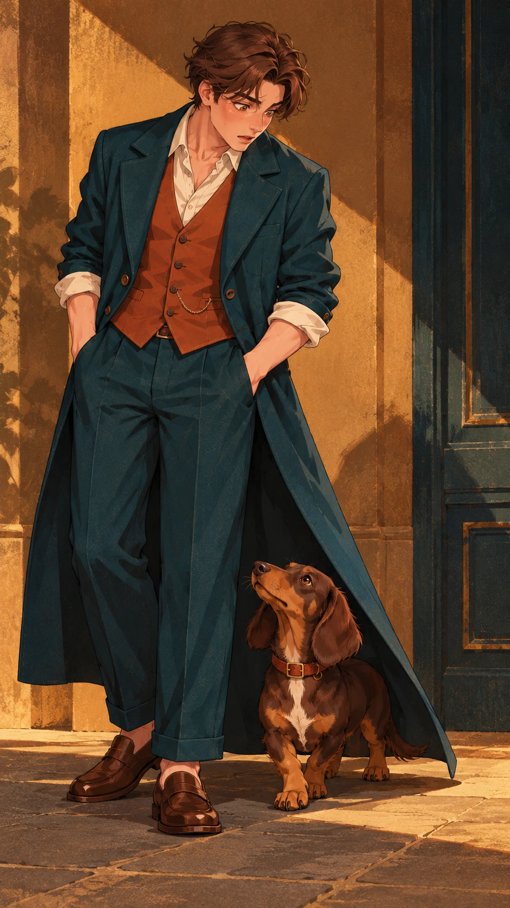
畫面描述｜中文
豆扣從過長衣襬一側鑽出，四腳在地，阿禾俯視時露出驚訝；外套仍長至腳踝。
Frame description｜English
Doukou emerges from one side beneath the long coat, all four paws grounded; A-He looks down in surprise, coat still ankle-long.
Video Caption｜中文
你卻找到自己的路
Video Caption｜English
You found your own way.
圖像提示詞｜中文｜9:16
9:16直式，單一動畫分鏡，近景。赭棕青綠復古時裝插畫，雕塑般髮塊、幾何硬邊陰影、局部印刷顆粒。畫面：豆扣從過長衣襬一側鑽出，四腳在地，阿禾俯視時露出驚訝；外套仍長至腳踝。角色一致性：20歲青年裁縫阿禾，身高158公分、偏矮結實、約6.5頭身；深棕側分短髮、琥珀眼、圓方臉，無眼鏡。米白捲袖襯衫、赭紅背心、深青綠長褲、棕樂福鞋。深青綠單排兩扣外套：起初長至腳踝，改好後下襬在大腿中段，其餘領型袖口顏色不變。 臘腸犬豆扣，肩高22公分、鼻至臀58公分，長身短腿，巧克力棕毛、淺棕口鼻與腳掌、胸口一小塊奶白毛、下垂長耳，赭紅細項圈。鏡頭08之前不穿衣；08起加一件深青綠短披肩，無帽。角色設定/character_human.png 與角色設定/character_animal.png 固定造型，角色設定/character_scale.png 固定體型。只載入本鏡頭有出現的角色參考，無角色的物件特寫不加入角色。以本鏡頭指定的衣物與道具階段為準；不把完成後的狀態提早出現。不加文字、字幕、標誌、水印、第三個角色；不畫拼貼、分格或角色轉身表。不改臉型、髮型、衣色、動物花紋與比例；不增加肢體或道具。
Image prompt｜English｜9:16
Vertical 9:16, ONE animation storyboard frame, Medium close-up. STYLE: Retro fashion editorial illustration, ochre-brown ground, deep teal and focused rust accents, sculptural grouped hair, geometric hard-edged light and shadow, subtle local print grain, composed and stylish. FRAME: Doukou emerges from one side beneath the long coat, all four paws grounded; A-He looks down in surprise, coat still ankle-long. CHARACTER LOCK: A-He, a 20-year-old male apprentice tailor, 158 cm tall, short sturdy build, 6.5 heads high; short dark-brown side-parted hair, amber eyes, rounded square face, no glasses. Cream rolled-sleeve shirt, rust waistcoat, dark-teal trousers, brown loafers. A dark-teal single-breasted two-button coat: ankle-long before alteration, mid-thigh length after alteration, with identical lapels, sleeves and fabric. Doukou, a dachshund, shoulder height 22 cm, nose-to-rump length 58 cm; long low body, short legs, chocolate coat, tan muzzle and paws, small cream chest patch, long floppy ears, narrow rust collar. No clothing before shot 08; a short dark-teal hoodless cape from shot 08 onward. Use character_human.png and character_animal.png for exact designs, character_scale.png for size. Load only the character references visible in this shot; do not add characters to object-only close-ups. The specific shot state takes priority: do not introduce later wardrobe or prop states early. No text, captions, logos, watermarks, extra characters, collage, panels or turnaround. No redesign, scale drift, extra limbs, duplicated props or photographic rendering.
影片提示詞｜中文｜5秒｜9:16
5秒，9:16，以上述分鏡圖為唯一首幀。赭棕青綠復古時裝插畫，雕塑般髮塊、幾何硬邊陰影、局部印刷顆粒。豆扣從過長衣襬一側鑽出，四腳在地，阿禾俯視時露出驚訝；外套仍長至腳踝。動作與運鏡：鏡頭輕下移，豆扣走出一步停住，長耳輕晃。保持原圖角色、體型、場景位置與道具狀態，運動自然且小幅；最後0.5秒穩定收住。不要切鏡、變形、閃爍、憑空新增物件或生成文字；字幕於剪輯時另疊。
Video prompt｜English｜5 seconds｜9:16
5 seconds, vertical 9:16. Use the matching storyboard image as the sole first frame. Retro fashion editorial illustration, ochre-brown ground, deep teal and focused rust accents, sculptural grouped hair, geometric hard-edged light and shadow, subtle local print grain, composed and stylish. Doukou emerges from one side beneath the long coat, all four paws grounded; A-He looks down in surprise, coat still ankle-long. MOTION AND CAMERA: Gently tilt down as Doukou takes one step out and stops, ears swaying. Preserve the supplied designs, body scale, scene geography and prop state; small natural movement, settle for the final 0.5 second. No cuts, morphing, flicker, invented objects or generated text. Add captions during editing.
Medium shot｜A Change of View｜20–25 秒（5 秒）
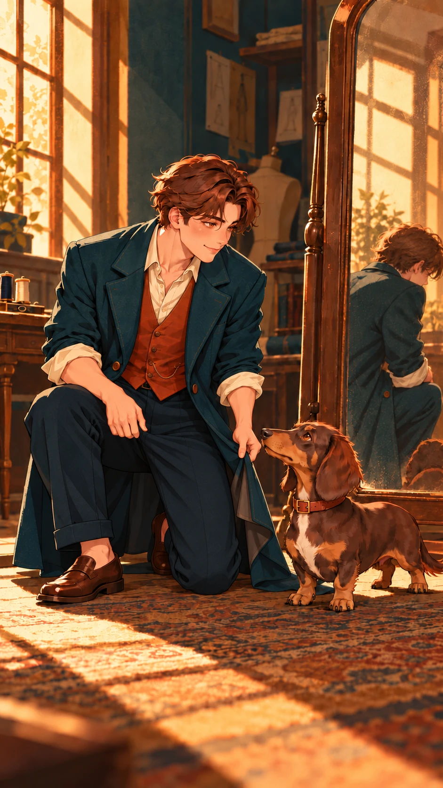
畫面描述｜中文
阿禾在鏡旁蹲下，將長衣襬拎離地面，與豆扣平視並微笑，暖色側光。
Frame description｜English
Beside the mirror, A-He crouches and lifts the trailing hem clear of the floor, smiling at Doukou at eye level in warm side light.
Video Caption｜中文
原來不必高過自己
Video Caption｜English
I need not outgrow myself.
圖像提示詞｜中文｜9:16
9:16直式，單一動畫分鏡，中景。赭棕青綠復古時裝插畫，雕塑般髮塊、幾何硬邊陰影、局部印刷顆粒。畫面：阿禾在鏡旁蹲下，將長衣襬拎離地面，與豆扣平視並微笑，暖色側光。角色一致性：20歲青年裁縫阿禾，身高158公分、偏矮結實、約6.5頭身；深棕側分短髮、琥珀眼、圓方臉，無眼鏡。米白捲袖襯衫、赭紅背心、深青綠長褲、棕樂福鞋。深青綠單排兩扣外套：起初長至腳踝，改好後下襬在大腿中段，其餘領型袖口顏色不變。 臘腸犬豆扣，肩高22公分、鼻至臀58公分，長身短腿，巧克力棕毛、淺棕口鼻與腳掌、胸口一小塊奶白毛、下垂長耳，赭紅細項圈。鏡頭08之前不穿衣；08起加一件深青綠短披肩，無帽。角色設定/character_human.png 與角色設定/character_animal.png 固定造型，角色設定/character_scale.png 固定體型。只載入本鏡頭有出現的角色參考，無角色的物件特寫不加入角色。以本鏡頭指定的衣物與道具階段為準；不把完成後的狀態提早出現。不加文字、字幕、標誌、水印、第三個角色；不畫拼貼、分格或角色轉身表。不改臉型、髮型、衣色、動物花紋與比例；不增加肢體或道具。
Image prompt｜English｜9:16
Vertical 9:16, ONE animation storyboard frame, Medium shot. STYLE: Retro fashion editorial illustration, ochre-brown ground, deep teal and focused rust accents, sculptural grouped hair, geometric hard-edged light and shadow, subtle local print grain, composed and stylish. FRAME: Beside the mirror, A-He crouches and lifts the trailing hem clear of the floor, smiling at Doukou at eye level in warm side light. CHARACTER LOCK: A-He, a 20-year-old male apprentice tailor, 158 cm tall, short sturdy build, 6.5 heads high; short dark-brown side-parted hair, amber eyes, rounded square face, no glasses. Cream rolled-sleeve shirt, rust waistcoat, dark-teal trousers, brown loafers. A dark-teal single-breasted two-button coat: ankle-long before alteration, mid-thigh length after alteration, with identical lapels, sleeves and fabric. Doukou, a dachshund, shoulder height 22 cm, nose-to-rump length 58 cm; long low body, short legs, chocolate coat, tan muzzle and paws, small cream chest patch, long floppy ears, narrow rust collar. No clothing before shot 08; a short dark-teal hoodless cape from shot 08 onward. Use character_human.png and character_animal.png for exact designs, character_scale.png for size. Load only the character references visible in this shot; do not add characters to object-only close-ups. The specific shot state takes priority: do not introduce later wardrobe or prop states early. No text, captions, logos, watermarks, extra characters, collage, panels or turnaround. No redesign, scale drift, extra limbs, duplicated props or photographic rendering.
影片提示詞｜中文｜5秒｜9:16
5秒，9:16，以上述分鏡圖為唯一首幀。赭棕青綠復古時裝插畫，雕塑般髮塊、幾何硬邊陰影、局部印刷顆粒。阿禾在鏡旁蹲下，將長衣襬拎離地面，與豆扣平視並微笑，暖色側光。動作與運鏡：緩慢側移，阿禾的眉頭鬆開，狗輕歪頭。保持原圖角色、體型、場景位置與道具狀態，運動自然且小幅；最後0.5秒穩定收住。不要切鏡、變形、閃爍、憑空新增物件或生成文字；字幕於剪輯時另疊。
Video prompt｜English｜5 seconds｜9:16
5 seconds, vertical 9:16. Use the matching storyboard image as the sole first frame. Retro fashion editorial illustration, ochre-brown ground, deep teal and focused rust accents, sculptural grouped hair, geometric hard-edged light and shadow, subtle local print grain, composed and stylish. Beside the mirror, A-He crouches and lifts the trailing hem clear of the floor, smiling at Doukou at eye level in warm side light. MOTION AND CAMERA: Slow lateral drift as his brow relaxes and the dog tilts its head. Preserve the supplied designs, body scale, scene geography and prop state; small natural movement, settle for the final 0.5 second. No cuts, morphing, flicker, invented objects or generated text. Add captions during editing.
Medium close-up｜My Own Measure｜25–30 秒（5 秒）
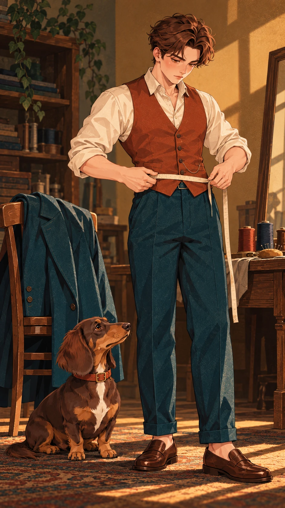
畫面描述｜中文
外套已脫下掛在椅背，阿禾穿固定襯衫背心，用無字軟尺量自己的身長，豆扣坐在旁邊。
Frame description｜English
The coat hangs over a chair; wearing his shirt and waistcoat, A-He measures his own body with an unmarked tape while Doukou sits nearby.
Video Caption｜中文
把尺度還給我自己
Video Caption｜English
My measure is my own.
圖像提示詞｜中文｜9:16
9:16直式，單一動畫分鏡，中近景。赭棕青綠復古時裝插畫，雕塑般髮塊、幾何硬邊陰影、局部印刷顆粒。畫面：外套已脫下掛在椅背，阿禾穿固定襯衫背心，用無字軟尺量自己的身長，豆扣坐在旁邊。角色一致性：20歲青年裁縫阿禾，身高158公分、偏矮結實、約6.5頭身；深棕側分短髮、琥珀眼、圓方臉，無眼鏡。米白捲袖襯衫、赭紅背心、深青綠長褲、棕樂福鞋。深青綠單排兩扣外套：起初長至腳踝，改好後下襬在大腿中段，其餘領型袖口顏色不變。 臘腸犬豆扣，肩高22公分、鼻至臀58公分，長身短腿，巧克力棕毛、淺棕口鼻與腳掌、胸口一小塊奶白毛、下垂長耳，赭紅細項圈。鏡頭08之前不穿衣；08起加一件深青綠短披肩，無帽。角色設定/character_human.png 與角色設定/character_animal.png 固定造型，角色設定/character_scale.png 固定體型。只載入本鏡頭有出現的角色參考，無角色的物件特寫不加入角色。以本鏡頭指定的衣物與道具階段為準；不把完成後的狀態提早出現。不加文字、字幕、標誌、水印、第三個角色；不畫拼貼、分格或角色轉身表。不改臉型、髮型、衣色、動物花紋與比例；不增加肢體或道具。
Image prompt｜English｜9:16
Vertical 9:16, ONE animation storyboard frame, Medium close-up. STYLE: Retro fashion editorial illustration, ochre-brown ground, deep teal and focused rust accents, sculptural grouped hair, geometric hard-edged light and shadow, subtle local print grain, composed and stylish. FRAME: The coat hangs over a chair; wearing his shirt and waistcoat, A-He measures his own body with an unmarked tape while Doukou sits nearby. CHARACTER LOCK: A-He, a 20-year-old male apprentice tailor, 158 cm tall, short sturdy build, 6.5 heads high; short dark-brown side-parted hair, amber eyes, rounded square face, no glasses. Cream rolled-sleeve shirt, rust waistcoat, dark-teal trousers, brown loafers. A dark-teal single-breasted two-button coat: ankle-long before alteration, mid-thigh length after alteration, with identical lapels, sleeves and fabric. Doukou, a dachshund, shoulder height 22 cm, nose-to-rump length 58 cm; long low body, short legs, chocolate coat, tan muzzle and paws, small cream chest patch, long floppy ears, narrow rust collar. No clothing before shot 08; a short dark-teal hoodless cape from shot 08 onward. Use character_human.png and character_animal.png for exact designs, character_scale.png for size. Load only the character references visible in this shot; do not add characters to object-only close-ups. The specific shot state takes priority: do not introduce later wardrobe or prop states early. No text, captions, logos, watermarks, extra characters, collage, panels or turnaround. No redesign, scale drift, extra limbs, duplicated props or photographic rendering.
影片提示詞｜中文｜5秒｜9:16
5秒，9:16，以上述分鏡圖為唯一首幀。赭棕青綠復古時裝插畫，雕塑般髮塊、幾何硬邊陰影、局部印刷顆粒。外套已脫下掛在椅背，阿禾穿固定襯衫背心，用無字軟尺量自己的身長，豆扣坐在旁邊。動作與運鏡：固定鏡位，阿禾拉平軟尺後點頭，勿讓外套突然穿回身上。保持原圖角色、體型、場景位置與道具狀態，運動自然且小幅；最後0.5秒穩定收住。不要切鏡、變形、閃爍、憑空新增物件或生成文字；字幕於剪輯時另疊。
Video prompt｜English｜5 seconds｜9:16
5 seconds, vertical 9:16. Use the matching storyboard image as the sole first frame. Retro fashion editorial illustration, ochre-brown ground, deep teal and focused rust accents, sculptural grouped hair, geometric hard-edged light and shadow, subtle local print grain, composed and stylish. The coat hangs over a chair; wearing his shirt and waistcoat, A-He measures his own body with an unmarked tape while Doukou sits nearby. MOTION AND CAMERA: Locked camera: he straightens the tape and nods; the coat stays on the chair. Preserve the supplied designs, body scale, scene geography and prop state; small natural movement, settle for the final 0.5 second. No cuts, morphing, flicker, invented objects or generated text. Add captions during editing.
Overhead close-up｜A Lighter Cut｜30–35 秒（5 秒）
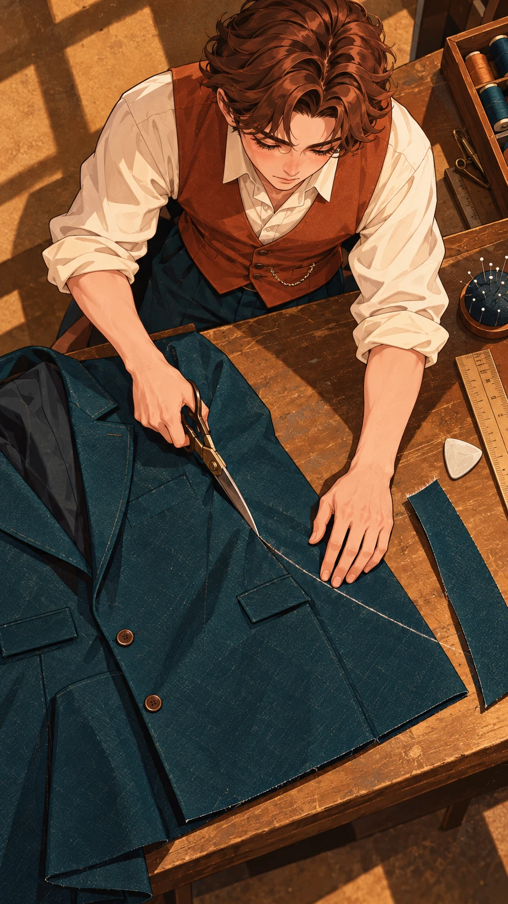
畫面描述｜中文
桌面俯視，只見阿禾捲袖雙手，以裁縫剪沿外套大腿長度的粉線剪下多餘布段；下方保留整齊青綠剩布，無狗。
Frame description｜English
Overhead tabletop close-up of A-He's rolled-sleeve hands trimming excess teal coat fabric along a chalk line for mid-thigh length; one neat offcut remains. No dog.
Video Caption｜中文
剪去不屬於的重量
Video Caption｜English
Let the extra weight go.
圖像提示詞｜中文｜9:16
9:16直式，單一動畫分鏡，俯拍特寫。赭棕青綠復古時裝插畫，雕塑般髮塊、幾何硬邊陰影、局部印刷顆粒。畫面：桌面俯視，只見阿禾捲袖雙手，以裁縫剪沿外套大腿長度的粉線剪下多餘布段；下方保留整齊青綠剩布，無狗。角色一致性：20歲青年裁縫阿禾，身高158公分、偏矮結實、約6.5頭身；深棕側分短髮、琥珀眼、圓方臉，無眼鏡。米白捲袖襯衫、赭紅背心、深青綠長褲、棕樂福鞋。深青綠單排兩扣外套：起初長至腳踝，改好後下襬在大腿中段，其餘領型袖口顏色不變。 角色設定/character_human.png 與角色設定/character_animal.png 固定造型，角色設定/character_scale.png 固定體型。只載入本鏡頭有出現的角色參考，無角色的物件特寫不加入角色。以本鏡頭指定的衣物與道具階段為準；不把完成後的狀態提早出現。不加文字、字幕、標誌、水印、第三個角色；不畫拼貼、分格或角色轉身表。不改臉型、髮型、衣色、動物花紋與比例；不增加肢體或道具。
Image prompt｜English｜9:16
Vertical 9:16, ONE animation storyboard frame, Overhead close-up. STYLE: Retro fashion editorial illustration, ochre-brown ground, deep teal and focused rust accents, sculptural grouped hair, geometric hard-edged light and shadow, subtle local print grain, composed and stylish. FRAME: Overhead tabletop close-up of A-He's rolled-sleeve hands trimming excess teal coat fabric along a chalk line for mid-thigh length; one neat offcut remains. No dog. CHARACTER LOCK: A-He, a 20-year-old male apprentice tailor, 158 cm tall, short sturdy build, 6.5 heads high; short dark-brown side-parted hair, amber eyes, rounded square face, no glasses. Cream rolled-sleeve shirt, rust waistcoat, dark-teal trousers, brown loafers. A dark-teal single-breasted two-button coat: ankle-long before alteration, mid-thigh length after alteration, with identical lapels, sleeves and fabric. Use character_human.png and character_animal.png for exact designs, character_scale.png for size. Load only the character references visible in this shot; do not add characters to object-only close-ups. The specific shot state takes priority: do not introduce later wardrobe or prop states early. No text, captions, logos, watermarks, extra characters, collage, panels or turnaround. No redesign, scale drift, extra limbs, duplicated props or photographic rendering.
影片提示詞｜中文｜5秒｜9:16
5秒，9:16，以上述分鏡圖為唯一首幀。赭棕青綠復古時裝插畫，雕塑般髮塊、幾何硬邊陰影、局部印刷顆粒。桌面俯視，只見阿禾捲袖雙手，以裁縫剪沿外套大腿長度的粉線剪下多餘布段；下方保留整齊青綠剩布，無狗。動作與運鏡：固定俯拍，只做一次短剪合，布段分離幾公分，手指遠離刀口。保持原圖角色、體型、場景位置與道具狀態，運動自然且小幅；最後0.5秒穩定收住。不要切鏡、變形、閃爍、憑空新增物件或生成文字；字幕於剪輯時另疊。
Video prompt｜English｜5 seconds｜9:16
5 seconds, vertical 9:16. Use the matching storyboard image as the sole first frame. Retro fashion editorial illustration, ochre-brown ground, deep teal and focused rust accents, sculptural grouped hair, geometric hard-edged light and shadow, subtle local print grain, composed and stylish. Overhead tabletop close-up of A-He's rolled-sleeve hands trimming excess teal coat fabric along a chalk line for mid-thigh length; one neat offcut remains. No dog. MOTION AND CAMERA: Locked overhead shot: one short scissor close separates the offcut a few centimeters; fingers stay clear. Preserve the supplied designs, body scale, scene geography and prop state; small natural movement, settle for the final 0.5 second. No cuts, morphing, flicker, invented objects or generated text. Add captions during editing.
Full shot｜A Fitting Smile｜35–40 秒（5 秒）
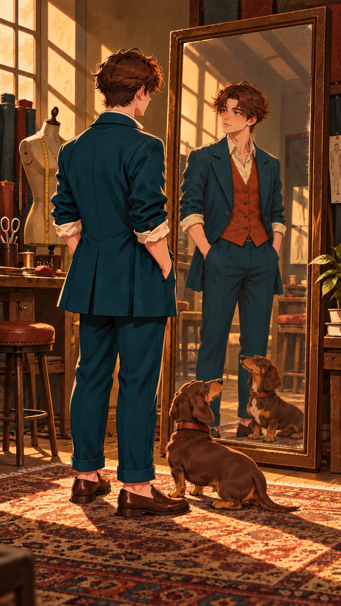
畫面描述｜中文
阿禾穿好大腿中段長的青綠外套，在鏡前自然挺胸；豆扣仍只有細項圈，未穿披肩。
Frame description｜English
A-He wears the finished mid-thigh teal coat and stands comfortably before the mirror; Doukou still wears only its collar, no cape yet.
Video Caption｜中文
合身就能挺起胸口
Video Caption｜English
The right fit lets me stand tall.
圖像提示詞｜中文｜9:16
9:16直式，單一動畫分鏡，全景。赭棕青綠復古時裝插畫，雕塑般髮塊、幾何硬邊陰影、局部印刷顆粒。畫面：阿禾穿好大腿中段長的青綠外套，在鏡前自然挺胸；豆扣仍只有細項圈，未穿披肩。角色一致性：20歲青年裁縫阿禾，身高158公分、偏矮結實、約6.5頭身；深棕側分短髮、琥珀眼、圓方臉，無眼鏡。米白捲袖襯衫、赭紅背心、深青綠長褲、棕樂福鞋。深青綠單排兩扣外套：起初長至腳踝，改好後下襬在大腿中段，其餘領型袖口顏色不變。 臘腸犬豆扣，肩高22公分、鼻至臀58公分，長身短腿，巧克力棕毛、淺棕口鼻與腳掌、胸口一小塊奶白毛、下垂長耳，赭紅細項圈。鏡頭08之前不穿衣；08起加一件深青綠短披肩，無帽。角色設定/character_human.png 與角色設定/character_animal.png 固定造型，角色設定/character_scale.png 固定體型。只載入本鏡頭有出現的角色參考，無角色的物件特寫不加入角色。以本鏡頭指定的衣物與道具階段為準；不把完成後的狀態提早出現。不加文字、字幕、標誌、水印、第三個角色；不畫拼貼、分格或角色轉身表。不改臉型、髮型、衣色、動物花紋與比例；不增加肢體或道具。
Image prompt｜English｜9:16
Vertical 9:16, ONE animation storyboard frame, Full shot. STYLE: Retro fashion editorial illustration, ochre-brown ground, deep teal and focused rust accents, sculptural grouped hair, geometric hard-edged light and shadow, subtle local print grain, composed and stylish. FRAME: A-He wears the finished mid-thigh teal coat and stands comfortably before the mirror; Doukou still wears only its collar, no cape yet. CHARACTER LOCK: A-He, a 20-year-old male apprentice tailor, 158 cm tall, short sturdy build, 6.5 heads high; short dark-brown side-parted hair, amber eyes, rounded square face, no glasses. Cream rolled-sleeve shirt, rust waistcoat, dark-teal trousers, brown loafers. A dark-teal single-breasted two-button coat: ankle-long before alteration, mid-thigh length after alteration, with identical lapels, sleeves and fabric. Doukou, a dachshund, shoulder height 22 cm, nose-to-rump length 58 cm; long low body, short legs, chocolate coat, tan muzzle and paws, small cream chest patch, long floppy ears, narrow rust collar. No clothing before shot 08; a short dark-teal hoodless cape from shot 08 onward. Use character_human.png and character_animal.png for exact designs, character_scale.png for size. Load only the character references visible in this shot; do not add characters to object-only close-ups. The specific shot state takes priority: do not introduce later wardrobe or prop states early. No text, captions, logos, watermarks, extra characters, collage, panels or turnaround. No redesign, scale drift, extra limbs, duplicated props or photographic rendering.
影片提示詞｜中文｜5秒｜9:16
5秒，9:16，以上述分鏡圖為唯一首幀。赭棕青綠復古時裝插畫，雕塑般髮塊、幾何硬邊陰影、局部印刷顆粒。阿禾穿好大腿中段長的青綠外套，在鏡前自然挺胸；豆扣仍只有細項圈，未穿披肩。動作與運鏡：緩推近，阿禾放鬆肩膀微笑，鏡中動作同步。保持原圖角色、體型、場景位置與道具狀態，運動自然且小幅；最後0.5秒穩定收住。不要切鏡、變形、閃爍、憑空新增物件或生成文字；字幕於剪輯時另疊。
Video prompt｜English｜5 seconds｜9:16
5 seconds, vertical 9:16. Use the matching storyboard image as the sole first frame. Retro fashion editorial illustration, ochre-brown ground, deep teal and focused rust accents, sculptural grouped hair, geometric hard-edged light and shadow, subtle local print grain, composed and stylish. A-He wears the finished mid-thigh teal coat and stands comfortably before the mirror; Doukou still wears only its collar, no cape yet. MOTION AND CAMERA: Slow push-in as he relaxes his shoulders and smiles, reflection synchronized. Preserve the supplied designs, body scale, scene geography and prop state; small natural movement, settle for the final 0.5 second. No cuts, morphing, flicker, invented objects or generated text. Add captions during editing.
Medium close-up｜Nothing Wasted｜40–45 秒（5 秒）
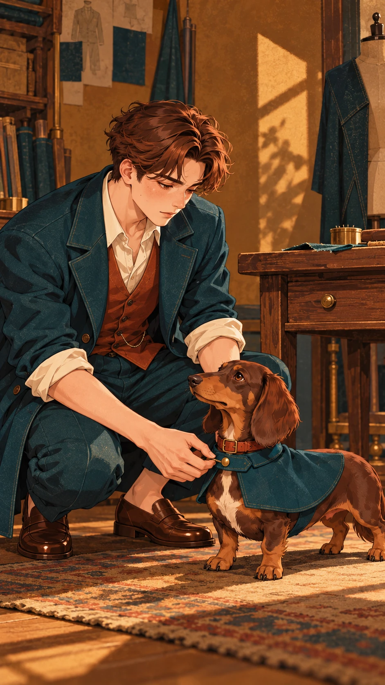
畫面描述｜中文
阿禾蹲著，為豆扣扣上以剩布做成的深青綠短披肩；犬身長腿短，披肩不拖地，桌上僅少量剩布。
Frame description｜English
Crouching, A-He fastens Doukou's short dark-teal offcut cape; the dog's long low body remains visible and the cape clears the floor; only a little scrap fabric on the table.
Video Caption｜中文
剩下的也能成溫柔
Video Caption｜English
Even scraps can become kindness.
圖像提示詞｜中文｜9:16
9:16直式，單一動畫分鏡，近景。赭棕青綠復古時裝插畫，雕塑般髮塊、幾何硬邊陰影、局部印刷顆粒。畫面：阿禾蹲著，為豆扣扣上以剩布做成的深青綠短披肩；犬身長腿短，披肩不拖地，桌上僅少量剩布。角色一致性：20歲青年裁縫阿禾，身高158公分、偏矮結實、約6.5頭身；深棕側分短髮、琥珀眼、圓方臉，無眼鏡。米白捲袖襯衫、赭紅背心、深青綠長褲、棕樂福鞋。深青綠單排兩扣外套：起初長至腳踝，改好後下襬在大腿中段，其餘領型袖口顏色不變。 臘腸犬豆扣，肩高22公分、鼻至臀58公分，長身短腿，巧克力棕毛、淺棕口鼻與腳掌、胸口一小塊奶白毛、下垂長耳，赭紅細項圈。鏡頭08之前不穿衣；08起加一件深青綠短披肩，無帽。角色設定/character_human.png 與角色設定/character_animal.png 固定造型，角色設定/character_scale.png 固定體型。只載入本鏡頭有出現的角色參考，無角色的物件特寫不加入角色。以本鏡頭指定的衣物與道具階段為準；不把完成後的狀態提早出現。不加文字、字幕、標誌、水印、第三個角色；不畫拼貼、分格或角色轉身表。不改臉型、髮型、衣色、動物花紋與比例；不增加肢體或道具。
Image prompt｜English｜9:16
Vertical 9:16, ONE animation storyboard frame, Medium close-up. STYLE: Retro fashion editorial illustration, ochre-brown ground, deep teal and focused rust accents, sculptural grouped hair, geometric hard-edged light and shadow, subtle local print grain, composed and stylish. FRAME: Crouching, A-He fastens Doukou's short dark-teal offcut cape; the dog's long low body remains visible and the cape clears the floor; only a little scrap fabric on the table. CHARACTER LOCK: A-He, a 20-year-old male apprentice tailor, 158 cm tall, short sturdy build, 6.5 heads high; short dark-brown side-parted hair, amber eyes, rounded square face, no glasses. Cream rolled-sleeve shirt, rust waistcoat, dark-teal trousers, brown loafers. A dark-teal single-breasted two-button coat: ankle-long before alteration, mid-thigh length after alteration, with identical lapels, sleeves and fabric. Doukou, a dachshund, shoulder height 22 cm, nose-to-rump length 58 cm; long low body, short legs, chocolate coat, tan muzzle and paws, small cream chest patch, long floppy ears, narrow rust collar. No clothing before shot 08; a short dark-teal hoodless cape from shot 08 onward. Use character_human.png and character_animal.png for exact designs, character_scale.png for size. Load only the character references visible in this shot; do not add characters to object-only close-ups. The specific shot state takes priority: do not introduce later wardrobe or prop states early. No text, captions, logos, watermarks, extra characters, collage, panels or turnaround. No redesign, scale drift, extra limbs, duplicated props or photographic rendering.
影片提示詞｜中文｜5秒｜9:16
5秒，9:16，以上述分鏡圖為唯一首幀。赭棕青綠復古時裝插畫，雕塑般髮塊、幾何硬邊陰影、局部印刷顆粒。阿禾蹲著，為豆扣扣上以剩布做成的深青綠短披肩；犬身長腿短，披肩不拖地，桌上僅少量剩布。動作與運鏡：固定鏡位，只扣好一顆小扣，狗抬頭望向他。保持原圖角色、體型、場景位置與道具狀態，運動自然且小幅；最後0.5秒穩定收住。不要切鏡、變形、閃爍、憑空新增物件或生成文字；字幕於剪輯時另疊。
Video prompt｜English｜5 seconds｜9:16
5 seconds, vertical 9:16. Use the matching storyboard image as the sole first frame. Retro fashion editorial illustration, ochre-brown ground, deep teal and focused rust accents, sculptural grouped hair, geometric hard-edged light and shadow, subtle local print grain, composed and stylish. Crouching, A-He fastens Doukou's short dark-teal offcut cape; the dog's long low body remains visible and the cape clears the floor; only a little scrap fabric on the table. MOTION AND CAMERA: Locked camera: he fastens one small button and the dog looks up at him. Preserve the supplied designs, body scale, scene geography and prop state; small natural movement, settle for the final 0.5 second. No cuts, morphing, flicker, invented objects or generated text. Add captions during editing.
Wide shot｜Out Together｜45–50 秒（5 秒）
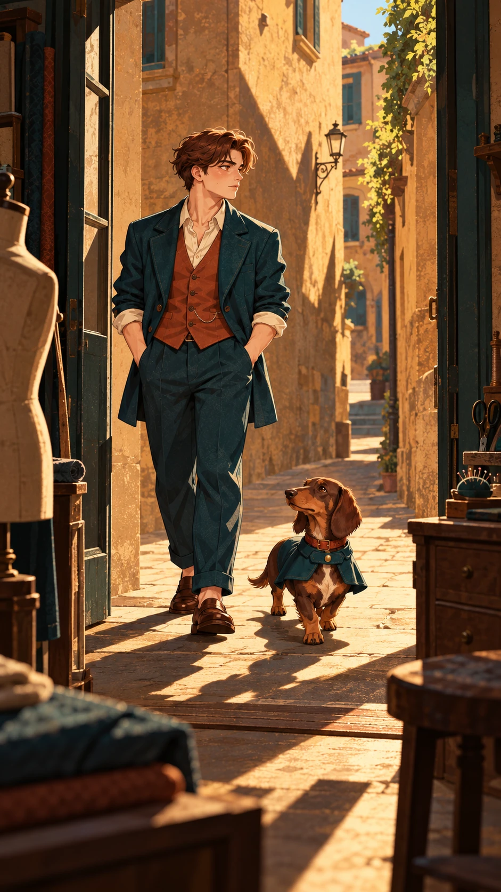
畫面描述｜中文
由室內看向敞開店門，阿禾穿合身外套、豆扣穿短披肩，一高一低跨向赭色短巷；畫面無招牌文字。
Frame description｜English
From inside the open shop doorway, A-He in his fitted coat and Doukou in its short cape step toward the ochre alley, their different heights clear; no lettering.
Video Caption｜中文
不同也能一起出發
Video Caption｜English
Different, yet onward together.
圖像提示詞｜中文｜9:16
9:16直式，單一動畫分鏡，遠景。赭棕青綠復古時裝插畫，雕塑般髮塊、幾何硬邊陰影、局部印刷顆粒。畫面：由室內看向敞開店門，阿禾穿合身外套、豆扣穿短披肩，一高一低跨向赭色短巷；畫面無招牌文字。角色一致性：20歲青年裁縫阿禾，身高158公分、偏矮結實、約6.5頭身；深棕側分短髮、琥珀眼、圓方臉，無眼鏡。米白捲袖襯衫、赭紅背心、深青綠長褲、棕樂福鞋。深青綠單排兩扣外套：起初長至腳踝，改好後下襬在大腿中段，其餘領型袖口顏色不變。 臘腸犬豆扣，肩高22公分、鼻至臀58公分，長身短腿，巧克力棕毛、淺棕口鼻與腳掌、胸口一小塊奶白毛、下垂長耳，赭紅細項圈。鏡頭08之前不穿衣；08起加一件深青綠短披肩，無帽。角色設定/character_human.png 與角色設定/character_animal.png 固定造型，角色設定/character_scale.png 固定體型。只載入本鏡頭有出現的角色參考，無角色的物件特寫不加入角色。以本鏡頭指定的衣物與道具階段為準；不把完成後的狀態提早出現。不加文字、字幕、標誌、水印、第三個角色；不畫拼貼、分格或角色轉身表。不改臉型、髮型、衣色、動物花紋與比例；不增加肢體或道具。
Image prompt｜English｜9:16
Vertical 9:16, ONE animation storyboard frame, Wide shot. STYLE: Retro fashion editorial illustration, ochre-brown ground, deep teal and focused rust accents, sculptural grouped hair, geometric hard-edged light and shadow, subtle local print grain, composed and stylish. FRAME: From inside the open shop doorway, A-He in his fitted coat and Doukou in its short cape step toward the ochre alley, their different heights clear; no lettering. CHARACTER LOCK: A-He, a 20-year-old male apprentice tailor, 158 cm tall, short sturdy build, 6.5 heads high; short dark-brown side-parted hair, amber eyes, rounded square face, no glasses. Cream rolled-sleeve shirt, rust waistcoat, dark-teal trousers, brown loafers. A dark-teal single-breasted two-button coat: ankle-long before alteration, mid-thigh length after alteration, with identical lapels, sleeves and fabric. Doukou, a dachshund, shoulder height 22 cm, nose-to-rump length 58 cm; long low body, short legs, chocolate coat, tan muzzle and paws, small cream chest patch, long floppy ears, narrow rust collar. No clothing before shot 08; a short dark-teal hoodless cape from shot 08 onward. Use character_human.png and character_animal.png for exact designs, character_scale.png for size. Load only the character references visible in this shot; do not add characters to object-only close-ups. The specific shot state takes priority: do not introduce later wardrobe or prop states early. No text, captions, logos, watermarks, extra characters, collage, panels or turnaround. No redesign, scale drift, extra limbs, duplicated props or photographic rendering.
影片提示詞｜中文｜5秒｜9:16
5秒，9:16，以上述分鏡圖為唯一首幀。赭棕青綠復古時裝插畫，雕塑般髮塊、幾何硬邊陰影、局部印刷顆粒。由室內看向敞開店門，阿禾穿合身外套、豆扣穿短披肩，一高一低跨向赭色短巷；畫面無招牌文字。動作與運鏡：慢慢跟拍兩者各往門外走一步，固定身高差，門保持敞開。保持原圖角色、體型、場景位置與道具狀態，運動自然且小幅；最後0.5秒穩定收住。不要切鏡、變形、閃爍、憑空新增物件或生成文字；字幕於剪輯時另疊。
Video prompt｜English｜5 seconds｜9:16
5 seconds, vertical 9:16. Use the matching storyboard image as the sole first frame. Retro fashion editorial illustration, ochre-brown ground, deep teal and focused rust accents, sculptural grouped hair, geometric hard-edged light and shadow, subtle local print grain, composed and stylish. From inside the open shop doorway, A-He in his fitted coat and Doukou in its short cape step toward the ochre alley, their different heights clear; no lettering. MOTION AND CAMERA: Slow follow as both take one step outside, maintaining their size difference; the door stays open. Preserve the supplied designs, body scale, scene geography and prop state; small natural movement, settle for the final 0.5 second. No cuts, morphing, flicker, invented objects or generated text. Add captions during editing.
Medium shot｜Our Own Stride｜50–55 秒（5 秒）
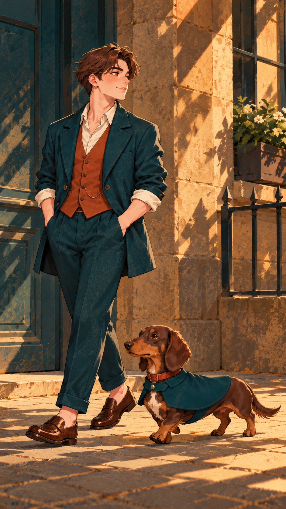
畫面描述｜中文
街道側面中景，阿禾抬頭輕笑，合身外套下襬離膝清楚，豆扣披肩與長身並列在腳邊，午後幾何影子。
Frame description｜English
Side-on medium street view: A-He smiles with his chin lifted, fitted coat hem clearly above his knees; caped Doukou walks at his feet amid geometric afternoon shadows.
Video Caption｜中文
照自己的步幅發光
Video Caption｜English
Shine at your own pace.
圖像提示詞｜中文｜9:16
9:16直式，單一動畫分鏡，中景。赭棕青綠復古時裝插畫，雕塑般髮塊、幾何硬邊陰影、局部印刷顆粒。畫面：街道側面中景，阿禾抬頭輕笑，合身外套下襬離膝清楚，豆扣披肩與長身並列在腳邊，午後幾何影子。角色一致性：20歲青年裁縫阿禾，身高158公分、偏矮結實、約6.5頭身；深棕側分短髮、琥珀眼、圓方臉，無眼鏡。米白捲袖襯衫、赭紅背心、深青綠長褲、棕樂福鞋。深青綠單排兩扣外套：起初長至腳踝，改好後下襬在大腿中段，其餘領型袖口顏色不變。 臘腸犬豆扣，肩高22公分、鼻至臀58公分，長身短腿，巧克力棕毛、淺棕口鼻與腳掌、胸口一小塊奶白毛、下垂長耳，赭紅細項圈。鏡頭08之前不穿衣；08起加一件深青綠短披肩，無帽。角色設定/character_human.png 與角色設定/character_animal.png 固定造型，角色設定/character_scale.png 固定體型。只載入本鏡頭有出現的角色參考，無角色的物件特寫不加入角色。以本鏡頭指定的衣物與道具階段為準；不把完成後的狀態提早出現。不加文字、字幕、標誌、水印、第三個角色；不畫拼貼、分格或角色轉身表。不改臉型、髮型、衣色、動物花紋與比例；不增加肢體或道具。
Image prompt｜English｜9:16
Vertical 9:16, ONE animation storyboard frame, Medium shot. STYLE: Retro fashion editorial illustration, ochre-brown ground, deep teal and focused rust accents, sculptural grouped hair, geometric hard-edged light and shadow, subtle local print grain, composed and stylish. FRAME: Side-on medium street view: A-He smiles with his chin lifted, fitted coat hem clearly above his knees; caped Doukou walks at his feet amid geometric afternoon shadows. CHARACTER LOCK: A-He, a 20-year-old male apprentice tailor, 158 cm tall, short sturdy build, 6.5 heads high; short dark-brown side-parted hair, amber eyes, rounded square face, no glasses. Cream rolled-sleeve shirt, rust waistcoat, dark-teal trousers, brown loafers. A dark-teal single-breasted two-button coat: ankle-long before alteration, mid-thigh length after alteration, with identical lapels, sleeves and fabric. Doukou, a dachshund, shoulder height 22 cm, nose-to-rump length 58 cm; long low body, short legs, chocolate coat, tan muzzle and paws, small cream chest patch, long floppy ears, narrow rust collar. No clothing before shot 08; a short dark-teal hoodless cape from shot 08 onward. Use character_human.png and character_animal.png for exact designs, character_scale.png for size. Load only the character references visible in this shot; do not add characters to object-only close-ups. The specific shot state takes priority: do not introduce later wardrobe or prop states early. No text, captions, logos, watermarks, extra characters, collage, panels or turnaround. No redesign, scale drift, extra limbs, duplicated props or photographic rendering.
影片提示詞｜中文｜5秒｜9:16
5秒，9:16，以上述分鏡圖為唯一首幀。赭棕青綠復古時裝插畫，雕塑般髮塊、幾何硬邊陰影、局部印刷顆粒。街道側面中景，阿禾抬頭輕笑，合身外套下襬離膝清楚，豆扣披肩與長身並列在腳邊，午後幾何影子。動作與運鏡：水平緩移，兩者以各自步幅走兩小步，外套與披肩微動。保持原圖角色、體型、場景位置與道具狀態，運動自然且小幅；最後0.5秒穩定收住。不要切鏡、變形、閃爍、憑空新增物件或生成文字；字幕於剪輯時另疊。
Video prompt｜English｜5 seconds｜9:16
5 seconds, vertical 9:16. Use the matching storyboard image as the sole first frame. Retro fashion editorial illustration, ochre-brown ground, deep teal and focused rust accents, sculptural grouped hair, geometric hard-edged light and shadow, subtle local print grain, composed and stylish. Side-on medium street view: A-He smiles with his chin lifted, fitted coat hem clearly above his knees; caped Doukou walks at his feet amid geometric afternoon shadows. MOTION AND CAMERA: Slow lateral track as they take two small steps at their own pace; coat and cape flutter slightly. Preserve the supplied designs, body scale, scene geography and prop state; small natural movement, settle for the final 0.5 second. No cuts, morphing, flicker, invented objects or generated text. Add captions during editing.
兩張海報另設前導與後記。需與全部十張分鏡比對場景、鏡位、姿態、動作及故事時刻，不能用首尾分鏡加字代替。兩張海報只包含相同的四段中英文片名及副標題。片尾採明亮、希望與安定的結局。
時間：00–05 秒。清晨的裁縫店窗台鳥瞰斜角：阿禾尚未穿外套，只穿固定襯衫背心，坐在窗內矮凳看無字布樣，豆扣未穿披肩、蜷在窗下圓墊。畫面主體是斜照窗框與幾塊青綠布樣，沒有全身鏡、試衣或街道走路。
海報圖像提示詞｜中文｜9:16
9:16直式獨立片頭前導海報，不能從十張分鏡改字重用。赭棕青綠復古時裝插畫，雕塑般髮塊、幾何硬邊陰影、局部印刷顆粒。清晨的裁縫店窗台鳥瞰斜角：阿禾尚未穿外套，只穿固定襯衫背心，坐在窗內矮凳看無字布樣，豆扣未穿披肩、蜷在窗下圓墊。畫面主體是斜照窗框與幾塊青綠布樣，沒有全身鏡、試衣或街道走路。角色鎖定：20歲青年裁縫阿禾，身高158公分、偏矮結實、約6.5頭身；深棕側分短髮、琥珀眼、圓方臉，無眼鏡。米白捲袖襯衫、赭紅背心、深青綠長褲、棕樂福鞋。深青綠單排兩扣外套：起初長至腳踝，改好後下襬在大腿中段，其餘領型袖口顏色不變。臘腸犬豆扣，肩高22公分、鼻至臀58公分，長身短腿，巧克力棕毛、淺棕口鼻與腳掌、胸口一小塊奶白毛、下垂長耳，赭紅細項圈。鏡頭08之前不穿衣；08起加一件深青綠短披肩，無帽。嚴格遵守本片四視圖與體型表；服裝、道具的前後狀態以此海報場景為準。上方約30%安排清楚排版、人物臉不被字遮住，四周保留安全邊界。海報只允許四段文字，各出現一次，逐字正確：中文大標題「不必長成別人」；英文大標題「Made to Be You」；中文副標題「合身的模樣，就是自己的光」；英文副標題「Your own shape is your own light.」。中英文可分行，但不能改字、漏字，不能有其他文字或標誌。
Poster image prompt｜English｜9:16
Vertical 9:16 standalone PROLOGUE opening movie poster, distinct composition and story moment, never a retitled storyboard. Retro fashion editorial illustration, ochre-brown ground, deep teal and focused rust accents, sculptural grouped hair, geometric hard-edged light and shadow, subtle local print grain, composed and stylish. SCENE: Prologue, early morning: steep oblique overhead view into a tailor-shop window alcove. A-He, in shirt and rust waistcoat WITHOUT any coat, sits on a low stool looking at plain teal swatches; unclothed Doukou curls on a round floor cushion below. Window-frame light and swatches dominate, no full-length mirror, fitting, doorway walk or street stride. Exact same character designs and size as supplied sheets. A-He, a 20-year-old male apprentice tailor, 158 cm tall, short sturdy build, 6.5 heads high; short dark-brown side-parted hair, amber eyes, rounded square face, no glasses. Cream rolled-sleeve shirt, rust waistcoat, dark-teal trousers, brown loafers. A dark-teal single-breasted two-button coat: ankle-long before alteration, mid-thigh length after alteration, with identical lapels, sleeves and fabric. Doukou, a dachshund, shoulder height 22 cm, nose-to-rump length 58 cm; long low body, short legs, chocolate coat, tan muzzle and paws, small cream chest patch, long floppy ears, narrow rust collar. No clothing before shot 08; a short dark-teal hoodless cape from shot 08 onward. The poster's explicitly stated temporal wardrobe and props override generic character timing. Reserve roughly upper 30% for elegant clear typography, safe margins, no text over faces. Render ONLY these FOUR text blocks, exactly once each, accurate Traditional Chinese and English; line breaks allowed, no other letters, symbols, credits or logos: "不必長成別人" / "Made to Be You" / "合身的模樣，就是自己的光" / "Your own shape is your own light.".
影片提示詞｜中文｜5秒｜9:16
5秒，9:16，以海報/poster_opening.png為唯一首幀，獨立片頭影片。赭棕青綠復古時裝插畫，雕塑般髮塊、幾何硬邊陰影、局部印刷顆粒。清晨的裁縫店窗台鳥瞰斜角：阿禾尚未穿外套，只穿固定襯衫背心，坐在窗內矮凳看無字布樣，豆扣未穿披肩、蜷在窗下圓墊。畫面主體是斜照窗框與幾塊青綠布樣，沒有全身鏡、試衣或街道走路。運鏡與動作：緩慢下移2%，窗簾邊輕動，青年把布樣翻一角，狗安睡。四段中英文標題副標題固定在原位置，字形、內容與可讀性全程不變；只讓場景微動，不讓文字隨場景透視變形。保留角色造型比例與原有道具，最後0.5秒穩定。不要切換成任何正片分鏡，不新增文字或角色。若工具無法鎖字，先移除文字製作底片，再於剪輯以相同四段文字固定疊回。
Video prompt｜English｜5 seconds｜9:16
5 seconds, vertical 9:16. Use 海報/poster_opening.png as the only first frame for a separate opening prologue clip. Retro fashion editorial illustration, ochre-brown ground, deep teal and focused rust accents, sculptural grouped hair, geometric hard-edged light and shadow, subtle local print grain, composed and stylish. Prologue, early morning: steep oblique overhead view into a tailor-shop window alcove. A-He, in shirt and rust waistcoat WITHOUT any coat, sits on a low stool looking at plain teal swatches; unclothed Doukou curls on a round floor cushion below. Window-frame light and swatches dominate, no full-length mirror, fitting, doorway walk or street stride. MOTION: Slow downward drift of 2%; curtain edge stirs, he turns one swatch corner and the dog sleeps. Lock all four Chinese/English title and subtitle blocks in their original screen positions, with exact glyphs and readability throughout; move only the scene, never warp text with perspective. Preserve character design, size and existing props; settle for the final 0.5 second. No cuts to storyboard shots, extra text or characters. If text cannot be locked, animate a text-free plate and overlay the same four blocks during editing.
時間：55–60 秒。午後街角長椅的高角度遠景：阿禾穿改好的合身外套坐在長椅一端，一手放鬆搭椅背；豆扣穿短披肩仰躺在旁邊低矮暖地磚上。兩者休息享受陽光，大面積赭色牆與樹影，沒有行走、試衣鏡或店門。
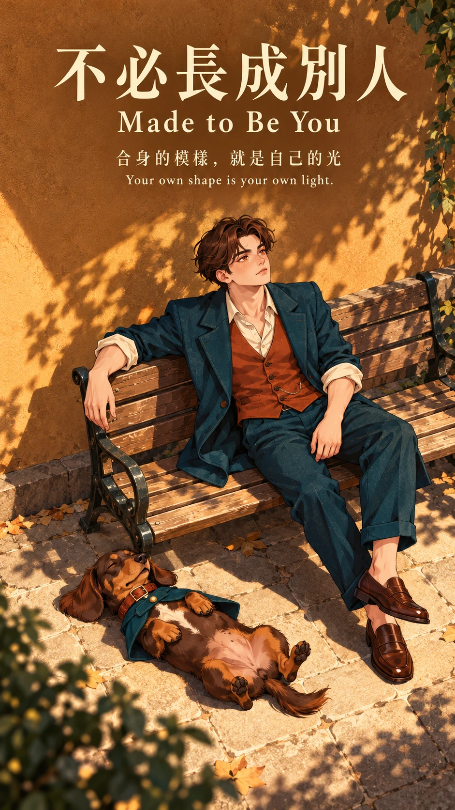
海報圖像提示詞｜中文｜9:16
9:16直式獨立片尾後記海報，不能從十張分鏡改字重用。赭棕青綠復古時裝插畫，雕塑般髮塊、幾何硬邊陰影、局部印刷顆粒。午後街角長椅的高角度遠景：阿禾穿改好的合身外套坐在長椅一端，一手放鬆搭椅背；豆扣穿短披肩仰躺在旁邊低矮暖地磚上。兩者休息享受陽光，大面積赭色牆與樹影，沒有行走、試衣鏡或店門。角色鎖定：20歲青年裁縫阿禾，身高158公分、偏矮結實、約6.5頭身；深棕側分短髮、琥珀眼、圓方臉，無眼鏡。米白捲袖襯衫、赭紅背心、深青綠長褲、棕樂福鞋。深青綠單排兩扣外套：起初長至腳踝，改好後下襬在大腿中段，其餘領型袖口顏色不變。臘腸犬豆扣，肩高22公分、鼻至臀58公分，長身短腿，巧克力棕毛、淺棕口鼻與腳掌、胸口一小塊奶白毛、下垂長耳，赭紅細項圈。鏡頭08之前不穿衣；08起加一件深青綠短披肩，無帽。嚴格遵守本片四視圖與體型表；服裝、道具的前後狀態以此海報場景為準。上方約30%安排清楚排版、人物臉不被字遮住，四周保留安全邊界。海報只允許四段文字，各出現一次，逐字正確：中文大標題「不必長成別人」；英文大標題「Made to Be You」；中文副標題「合身的模樣，就是自己的光」；英文副標題「Your own shape is your own light.」。中英文可分行，但不能改字、漏字，不能有其他文字或標誌。
Poster image prompt｜English｜9:16
Vertical 9:16 standalone EPILOGUE ending movie poster, distinct composition and story moment, never a retitled storyboard. Retro fashion editorial illustration, ochre-brown ground, deep teal and focused rust accents, sculptural grouped hair, geometric hard-edged light and shadow, subtle local print grain, composed and stylish. SCENE: Epilogue, later afternoon: high-angle long shot of a quiet street-corner bench. A-He wears the finished fitted coat, seated at one end with an arm along the backrest; caped Doukou relaxes belly-up on the warm low paving beside it. Broad ochre wall and leaf shadows, optimistic ease, no walking, mirror, fitting or shop doorway. Exact same character designs and size as supplied sheets. A-He, a 20-year-old male apprentice tailor, 158 cm tall, short sturdy build, 6.5 heads high; short dark-brown side-parted hair, amber eyes, rounded square face, no glasses. Cream rolled-sleeve shirt, rust waistcoat, dark-teal trousers, brown loafers. A dark-teal single-breasted two-button coat: ankle-long before alteration, mid-thigh length after alteration, with identical lapels, sleeves and fabric. Doukou, a dachshund, shoulder height 22 cm, nose-to-rump length 58 cm; long low body, short legs, chocolate coat, tan muzzle and paws, small cream chest patch, long floppy ears, narrow rust collar. No clothing before shot 08; a short dark-teal hoodless cape from shot 08 onward. The poster's explicitly stated temporal wardrobe and props override generic character timing. Reserve roughly upper 30% for elegant clear typography, safe margins, no text over faces. Render ONLY these FOUR text blocks, exactly once each, accurate Traditional Chinese and English; line breaks allowed, no other letters, symbols, credits or logos: "不必長成別人" / "Made to Be You" / "合身的模樣，就是自己的光" / "Your own shape is your own light.".
影片提示詞｜中文｜5秒｜9:16
5秒，9:16，以海報/poster_ending.png為唯一首幀，獨立片尾影片。赭棕青綠復古時裝插畫，雕塑般髮塊、幾何硬邊陰影、局部印刷顆粒。午後街角長椅的高角度遠景：阿禾穿改好的合身外套坐在長椅一端，一手放鬆搭椅背；豆扣穿短披肩仰躺在旁邊低矮暖地磚上。兩者休息享受陽光，大面積赭色牆與樹影，沒有行走、試衣鏡或店門。運鏡與動作：非常緩慢拉遠2%，樹影微搖、狗尾輕擺，青年保持坐姿微笑。四段中英文標題副標題固定在原位置，字形、內容與可讀性全程不變；只讓場景微動，不讓文字隨場景透視變形。保留角色造型比例與原有道具，最後0.5秒穩定。不要切換成任何正片分鏡，不新增文字或角色。若工具無法鎖字，先移除文字製作底片，再於剪輯以相同四段文字固定疊回。
Video prompt｜English｜5 seconds｜9:16
5 seconds, vertical 9:16. Use 海報/poster_ending.png as the only first frame for a separate ending epilogue clip. Retro fashion editorial illustration, ochre-brown ground, deep teal and focused rust accents, sculptural grouped hair, geometric hard-edged light and shadow, subtle local print grain, composed and stylish. Epilogue, later afternoon: high-angle long shot of a quiet street-corner bench. A-He wears the finished fitted coat, seated at one end with an arm along the backrest; caped Doukou relaxes belly-up on the warm low paving beside it. Broad ochre wall and leaf shadows, optimistic ease, no walking, mirror, fitting or shop doorway. MOTION: Very slow 2% pull-back; leaf shadows sway, dog's tail moves slightly, he remains seated smiling. Lock all four Chinese/English title and subtitle blocks in their original screen positions, with exact glyphs and readability throughout; move only the scene, never warp text with perspective. Preserve character design, size and existing props; settle for the final 0.5 second. No cuts to storyboard shots, extra text or characters. If text cannot be locked, animate a text-free plate and overlay the same four blocks during editing.
中文｜16:9
16:9橫式，白色背景、均勻光線，獨立角色設定表；同一角色四個全身視角依序為正面、45度、正側面、背面，大小相同、基線一致，不裁切頭腳。20歲青年裁縫阿禾，身高158公分、偏矮結實、約6.5頭身；深棕側分短髮、琥珀眼、圓方臉，無眼鏡。米白捲袖襯衫、赭紅背心、深青綠長褲、棕樂福鞋。深青綠單排兩扣外套：起初長至腳踝，改好後下襬在大腿中段，其餘領型袖口顏色不變。四個身體都穿改好後的大腿中段外套；改衣前僅衣長不同。赭棕青綠復古時裝插畫，雕塑般髮塊、幾何硬邊陰影、局部印刷顆粒。只參考原圖風格，不複製原圖角色與構圖；不加文字、標籤或其他角色。
English｜16:9
16:9 landscape character turnaround, pure white background, even neutral light. Four full-body views in order: front, 45-degree three-quarter, strict side, back, consistent size and baseline, complete heads and feet. A-He, a 20-year-old male apprentice tailor, 158 cm tall, short sturdy build, 6.5 heads high; short dark-brown side-parted hair, amber eyes, rounded square face, no glasses. Cream rolled-sleeve shirt, rust waistcoat, dark-teal trousers, brown loafers. A dark-teal single-breasted two-button coat: ankle-long before alteration, mid-thigh length after alteration, with identical lapels, sleeves and fabric. All four bodies show the FINAL mid-thigh coat; the earlier version differs only in length. Retro fashion editorial illustration, ochre-brown ground, deep teal and focused rust accents, sculptural grouped hair, geometric hard-edged light and shadow, subtle local print grain, composed and stylish. Input artwork is style only, not a character or composition to copy. No text, labels or additional characters.
中文｜16:9
16:9橫式，白色背景、均勻光線，獨立角色設定表；同一角色四個全身視角依序為正面、45度、正側面、背面，大小相同、基線一致，不裁切頭腳。臘腸犬豆扣，肩高22公分、鼻至臀58公分，長身短腿，巧克力棕毛、淺棕口鼻與腳掌、胸口一小塊奶白毛、下垂長耳，赭紅細項圈。鏡頭08之前不穿衣；08起加一件深青綠短披肩，無帽。四視圖只穿項圈，下方另畫一件獨立的短披肩平面附件。赭棕青綠復古時裝插畫，雕塑般髮塊、幾何硬邊陰影、局部印刷顆粒。只參考原圖風格，不複製原圖角色與構圖；不加文字、標籤或其他角色。
English｜16:9
16:9 landscape character turnaround, pure white background, even neutral light. Four full-body views in order: front, 45-degree three-quarter, strict side, back, consistent size and baseline, complete heads and feet. Doukou, a dachshund, shoulder height 22 cm, nose-to-rump length 58 cm; long low body, short legs, chocolate coat, tan muzzle and paws, small cream chest patch, long floppy ears, narrow rust collar. No clothing before shot 08; a short dark-teal hoodless cape from shot 08 onward. All four dog views wear collar only; one isolated short cape accessory below. Retro fashion editorial illustration, ochre-brown ground, deep teal and focused rust accents, sculptural grouped hair, geometric hard-edged light and shadow, subtle local print grain, composed and stylish. Input artwork is style only, not a character or composition to copy. No text, labels or additional characters.
中文｜16:9
16:9，純白背景、均勻光線，同一基線、同一空間尺度，只畫一個全身阿禾與一隻全身豆扣並列。20歲青年裁縫阿禾，身高158公分、偏矮結實、約6.5頭身；深棕側分短髮、琥珀眼、圓方臉，無眼鏡。米白捲袖襯衫、赭紅背心、深青綠長褲、棕樂福鞋。深青綠單排兩扣外套：起初長至腳踝，改好後下襬在大腿中段，其餘領型袖口顏色不變。臘腸犬豆扣，肩高22公分、鼻至臀58公分，長身短腿，巧克力棕毛、淺棕口鼻與腳掌、胸口一小塊奶白毛、下垂長耳，赭紅細項圈。鏡頭08之前不穿衣；08起加一件深青綠短披肩，無帽。造型依兩張角色四視圖；不為填滿版面放大動物。錦鯉另用無景物的透明淺水帶顯示水中姿態；其餘動物腳踏地。不加文字或網格。
English｜16:9
16:9 pure white shared size sheet, even light. One full-body 阿禾 and one 豆扣, same spatial scale and common baseline. A-He, a 20-year-old male apprentice tailor, 158 cm tall, short sturdy build, 6.5 heads high; short dark-brown side-parted hair, amber eyes, rounded square face, no glasses. Cream rolled-sleeve shirt, rust waistcoat, dark-teal trousers, brown loafers. A dark-teal single-breasted two-button coat: ankle-long before alteration, mid-thigh length after alteration, with identical lapels, sleeves and fabric. Doukou, a dachshund, shoulder height 22 cm, nose-to-rump length 58 cm; long low body, short legs, chocolate coat, tan muzzle and paws, small cream chest patch, long floppy ears, narrow rust collar. No clothing before shot 08; a short dark-teal hoodless cape from shot 08 onward. Match individual turnarounds, never enlarge animal to fill page. Koi only: submerged horizontally in a transparent pale water band with no scenery; all other animals grounded. No lettering or grid.
實際送出圖像工具的提示詞與參考來源另存於 ../04至10製作資料/生成記錄/；本規格提供可獨立複用的中英文提示詞。